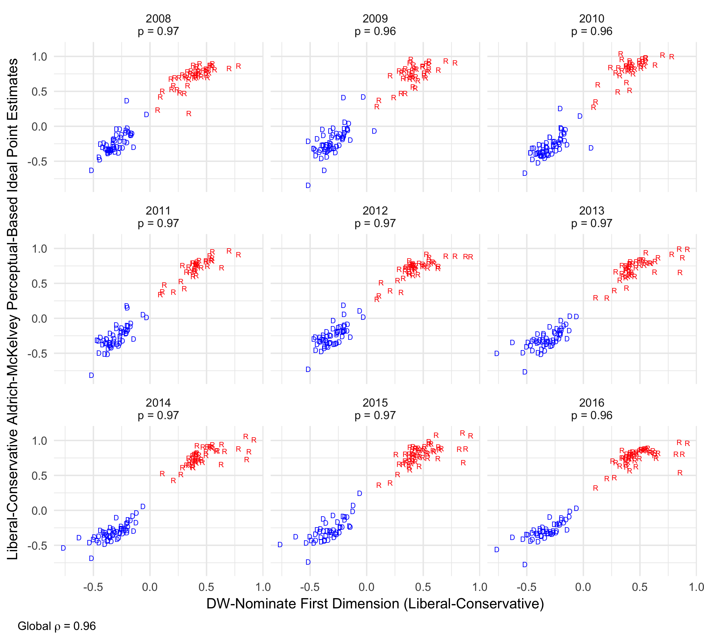
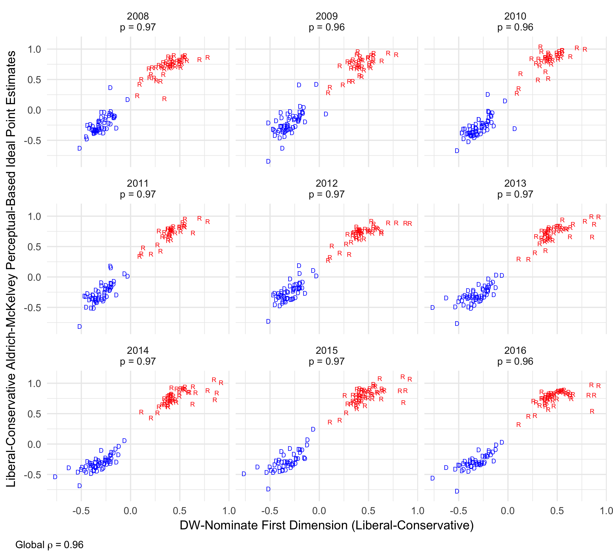
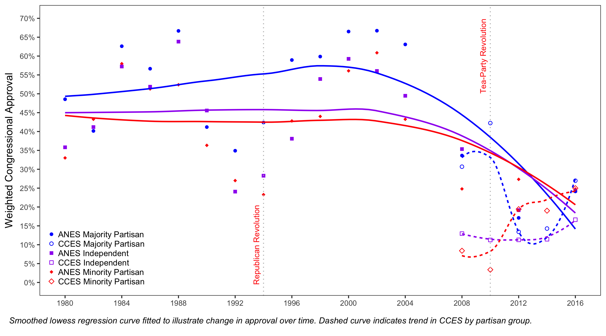
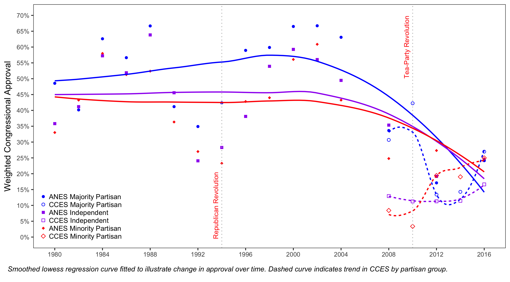
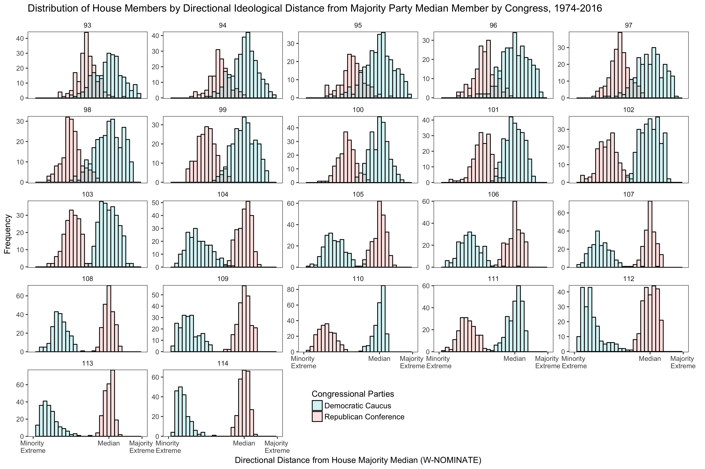
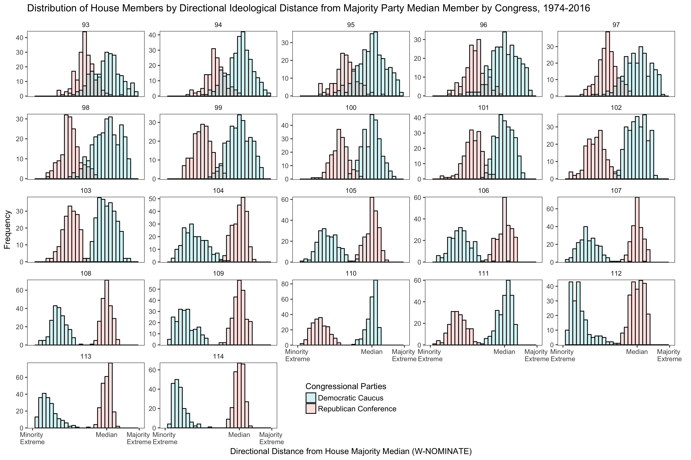
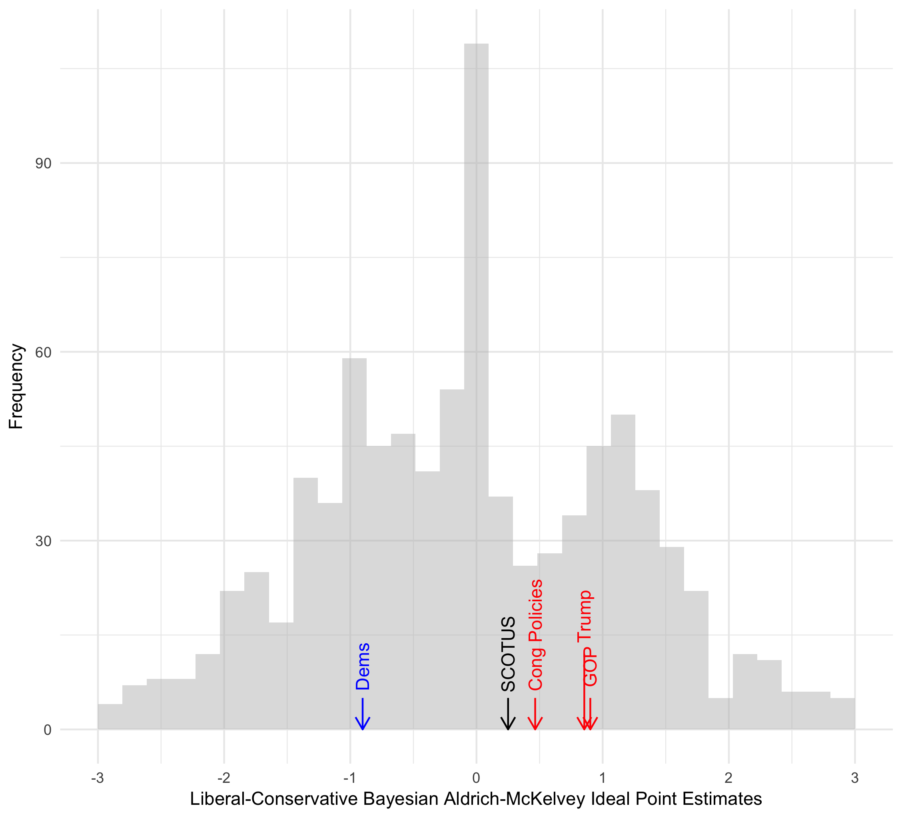
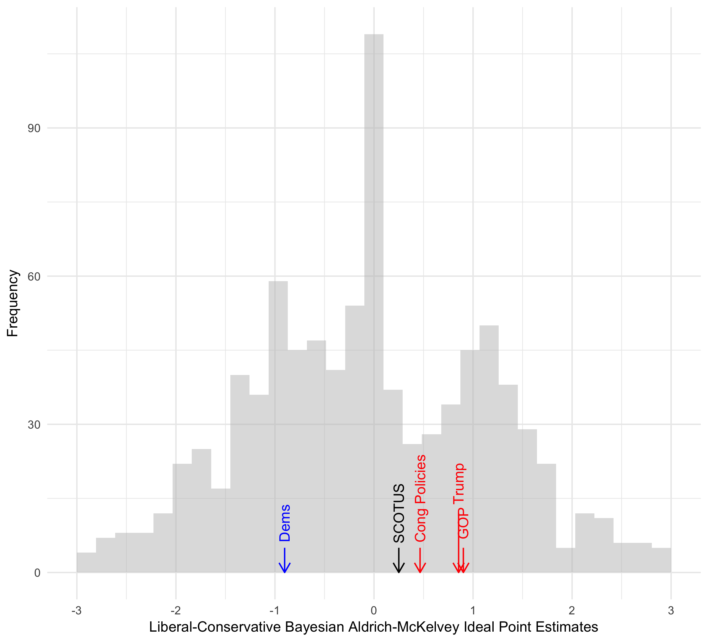

Collective Accountability in Congressional Elections: Conditions of Accountability & Implications for Legislative Incentives
Quarterly Job Approval of the U.S. Congress, 1974-2016

Dissertation Abstract Synopsis
“Popular government in a nation of more than 150 million people requires political parties which provide the electorate with a proper range of choice between alternatives of action.” -American Political Science Association (1950)
General Broad Dissertation Overview: Broadly, my dissertation evaluates what motivates citizen perceptions of congressional job performance, how citizens use these institutional perceptions to hold individual congressional candidates collectively accountable, and what incentives emerge from this type of collective accountability.
“Popular government in a nation of more than 150 million people requires political parties which provide the electorate with a proper range of choice between alternatives of action.” -American Political Science Association (1950)
General Broad Dissertation Overview: Broadly, my dissertation evaluates what motivates citizen perceptions of congressional job performance, how citizens use these institutional perceptions to hold individual congressional candidates collectively accountable, and what incentives emerge from this type of collective accountability.
U.S. Senator Aldrich-McKelvey Ideal Points by DW-Nominate Score

The Partisan & Ideological Determinants of Citizen Congressional Approval
\(\star\) Manuscript Under Review \(\star\)Working Manuscript Draft \(\star\)Manuscript Data Materials
Abstract: Do citizens weigh the ideological nature of collective representation provided by Congress when assessing the job performance of their national legislature? Conventional congressional approval models posit that approval is largely a function of partisan preferences or valence considerations, such as the state of the economy or assessments of presidential job performance. As a consequence, individual citizens do not weigh the collective ideological representation they receive from Congress when evaluating collective approval. However, recent aggregate-level work suggests that congressional approval rises when Congress responds to the ideological preferences of the mass public . I fill this disconnect between recent aggregate-level work and standing citizen-level models of approval by presenting a model which argues that citizens weigh the ideological representation provided by their Congress. Given that the contemporary Congress provides citizens with two contrasting options of collective ideological representation, I argue that congressional approval exhibits a distinct ideological and partisan component. Using cross-sectional and panel survey data which allows for scaling citizens and the congressional parties in the same ideological space, I find support for these two distinct components of approval. Specifically, I find that majority co-partisans and citizens closer in ideological proximity to the governing majority are more likely to approve of Congress. I also find that these two components are most salient with politically sophisticated citizens. These findings have implications for the capacity of citizens to assess the collective representation of the chief policy-making institution of their national government.

Abstract: Do citizens weigh the ideological nature of collective representation provided by Congress when assessing the job performance of their national legislature? Conventional congressional approval models posit that approval is largely a function of partisan preferences or valence considerations, such as the state of the economy or assessments of presidential job performance. As a consequence, individual citizens do not weigh the collective ideological representation they receive from Congress when evaluating collective approval. However, recent aggregate-level work suggests that congressional approval rises when Congress responds to the ideological preferences of the mass public . I fill this disconnect between recent aggregate-level work and standing citizen-level models of approval by presenting a model which argues that citizens weigh the ideological representation provided by their Congress. Given that the contemporary Congress provides citizens with two contrasting options of collective ideological representation, I argue that congressional approval exhibits a distinct ideological and partisan component. Using cross-sectional and panel survey data which allows for scaling citizens and the congressional parties in the same ideological space, I find support for these two distinct components of approval. Specifically, I find that majority co-partisans and citizens closer in ideological proximity to the governing majority are more likely to approve of Congress. I also find that these two components are most salient with politically sophisticated citizens. These findings have implications for the capacity of citizens to assess the collective representation of the chief policy-making institution of their national government.
Yearly Job Approval of the U.S. Congress in the American National Election Study
& Cooperative Congressional Election Study, 1980-2016

The “Collective Congress” on the Ballot? A Voter & Aggregate Level Analysis of Collective Responsibility in Congressional Elections
\(\star\)Working Dissertation Manuscript in Preparation \(\star\)Working Manuscript Draft \(\star\)Manuscript Data Materials
Abstract: The traditional view among scholars is that voters do not weigh congressional job performance in their congressional voting decisions. Recent work challenges this notion and provides evidence that congressional job approval matters at the ballot box. However, scholars are divided as to which party benefits from positive job approval ratings. Moreover, the literature is unclear regarding the conditions under which voters hold individual candidates accountable for the collective performance of Congress. Analyzing individual and aggregate level data, this study produces several key findings: (1) assessments of congressional job performance are directly tied to the electoral standing of the majority party; (2) positive approval ratings raise the level of support for majority party candidates among minority partisans and those closest to the minority in ideological proximity; (3) majority party incumbents gain more from congressional approval than non-incumbents and suffer less of a loss from congressional disapproval; (4) the impact of congressional approval on majority party fortunes is conditioned by how cohesive the majority party is. These findings provide a clearer narrative of how collective accountability works in congressional elections and the incentives for majority and minority party behavior in the contemporary Congress.

Abstract: The traditional view among scholars is that voters do not weigh congressional job performance in their congressional voting decisions. Recent work challenges this notion and provides evidence that congressional job approval matters at the ballot box. However, scholars are divided as to which party benefits from positive job approval ratings. Moreover, the literature is unclear regarding the conditions under which voters hold individual candidates accountable for the collective performance of Congress. Analyzing individual and aggregate level data, this study produces several key findings: (1) assessments of congressional job performance are directly tied to the electoral standing of the majority party; (2) positive approval ratings raise the level of support for majority party candidates among minority partisans and those closest to the minority in ideological proximity; (3) majority party incumbents gain more from congressional approval than non-incumbents and suffer less of a loss from congressional disapproval; (4) the impact of congressional approval on majority party fortunes is conditioned by how cohesive the majority party is. These findings provide a clearer narrative of how collective accountability works in congressional elections and the incentives for majority and minority party behavior in the contemporary Congress.
Polarization in the U.S. House Relative to Majority Median, 1974-2016

Collective Accountability in Congressional Elections: An Analysis of Congressional Approval & Ideological Extremity
\(\star\)Working Dissertation Manuscript in Preparation \(\star\)Working Manuscript Draft \(\star\)Manuscript Data Materials
Abstract: The conventional wisdom among students of congressional behavior is that the resurgence of elite polarization has facilitated the emergence of responsible American parties. Early scholarship on congressional accountability told of political parties and individual members that insulated themselves from the collective performance of the institution in which they served. Recent work suggests that elite polarization has weakened the ability of individual members to run on their individual accomplishments rather than their party’s collective legislative record, with majority members possessing an increasingly important stake in the collective party brand. However recent work is less clear as to the substantive meaning of congressional approval, and how the effect of approval varies across members of Congress. Using voter-level and aggregate-level data, this paper argues that congressional approval indicates satisfaction with the policies and positions espoused by the median legislator of the majority party and that the effect of approval on the electoral fortunes is conditioned by the relative distance between the member and the pivotal majority median legislator. This paper finds support for this argument and contributes to the broad literature on collective accountability by finding that the effect of congressional approval on vote choice and aggregate vote shares are both heterogeneous across members and contingent on a member’s relative ideological extremity to the pivotal majority median in Congress.

Abstract: The conventional wisdom among students of congressional behavior is that the resurgence of elite polarization has facilitated the emergence of responsible American parties. Early scholarship on congressional accountability told of political parties and individual members that insulated themselves from the collective performance of the institution in which they served. Recent work suggests that elite polarization has weakened the ability of individual members to run on their individual accomplishments rather than their party’s collective legislative record, with majority members possessing an increasingly important stake in the collective party brand. However recent work is less clear as to the substantive meaning of congressional approval, and how the effect of approval varies across members of Congress. Using voter-level and aggregate-level data, this paper argues that congressional approval indicates satisfaction with the policies and positions espoused by the median legislator of the majority party and that the effect of approval on the electoral fortunes is conditioned by the relative distance between the member and the pivotal majority median legislator. This paper finds support for this argument and contributes to the broad literature on collective accountability by finding that the effect of congressional approval on vote choice and aggregate vote shares are both heterogeneous across members and contingent on a member’s relative ideological extremity to the pivotal majority median in Congress.
Bayesian Aldrich-McKelvey Citizen Ideal Points & Stimuli Placement, 2017 CCES Module

The Procedural & Policy Origins of Voter Assessments of Congressional Job Performance
\(\star\)Working Dissertation Manuscript in Preparation \(\star\)Working Manuscript Draft \(\star\)Manuscript Data Materials
Abstract: Procedurally, the U.S. Congress is designed as a legislative institution with high transaction costs. Unsurprisingly, the inability of Congress to overcome these costs and pass policies that are consistent with the ideological preferences of the mass public is cited as one of the chief sources of low job approval assessments by voters. Yet, when Congress does act, recent aggregate-level work suggests that low approval may be exacerbated if Congress passes policies incompatible with the ideological preferences of the mass public (Ramirez 2012). While lack of ideological responsiveness and high transaction costs are identified as key determinants of congressional approval, no citizen-level model assesses to what extent these considerations shape evaluations of congressional job performance. In this paper, I specify a model arguing that congressional approval is a function of citizen procedural preferences and perceptions of spatial ideological representations. Specifically, I argue that voters with a preference for high transaction costs and close in ideological proximity to the policies passed by Congress are predisposed to approving of Congressional job performance and, by extension, the congressional majority party. Using data from an original Cooperative Congressional Elections Study (CCES) module, I specify an innovative measure of citizen preferences of the transaction costs relating to congressional procedure and evaluate the model in the context of collective and party-specific job approval. Results of this model have implications for literature isolating the policy component of congressional approval and how procedural preferences relating to transaction costs shape assessments of institutional job performance.

Abstract: Procedurally, the U.S. Congress is designed as a legislative institution with high transaction costs. Unsurprisingly, the inability of Congress to overcome these costs and pass policies that are consistent with the ideological preferences of the mass public is cited as one of the chief sources of low job approval assessments by voters. Yet, when Congress does act, recent aggregate-level work suggests that low approval may be exacerbated if Congress passes policies incompatible with the ideological preferences of the mass public (Ramirez 2012). While lack of ideological responsiveness and high transaction costs are identified as key determinants of congressional approval, no citizen-level model assesses to what extent these considerations shape evaluations of congressional job performance. In this paper, I specify a model arguing that congressional approval is a function of citizen procedural preferences and perceptions of spatial ideological representations. Specifically, I argue that voters with a preference for high transaction costs and close in ideological proximity to the policies passed by Congress are predisposed to approving of Congressional job performance and, by extension, the congressional majority party. Using data from an original Cooperative Congressional Elections Study (CCES) module, I specify an innovative measure of citizen preferences of the transaction costs relating to congressional procedure and evaluate the model in the context of collective and party-specific job approval. Results of this model have implications for literature isolating the policy component of congressional approval and how procedural preferences relating to transaction costs shape assessments of institutional job performance.
Copyright © 2017 by Carlos Algara. Made with RStudio.